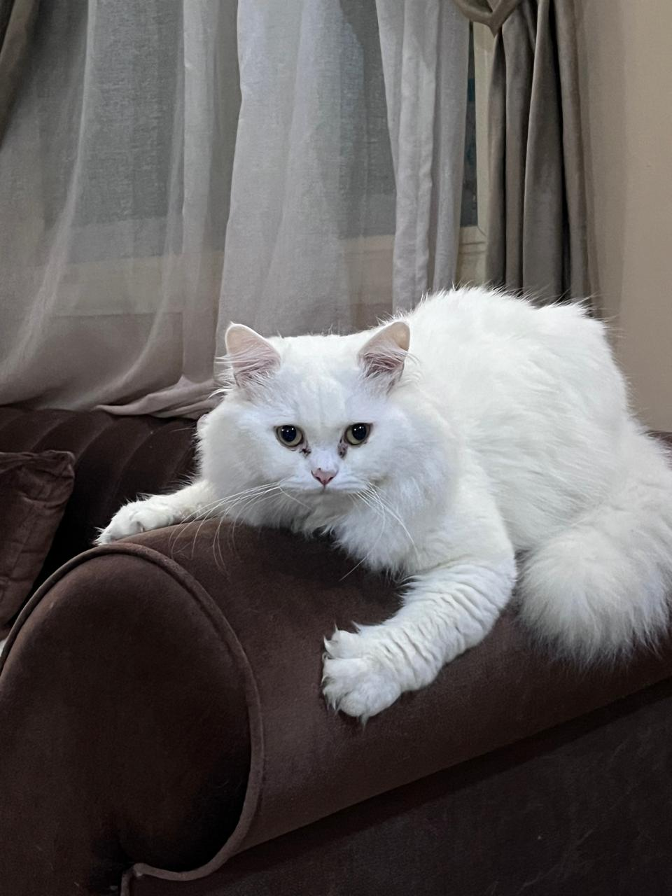
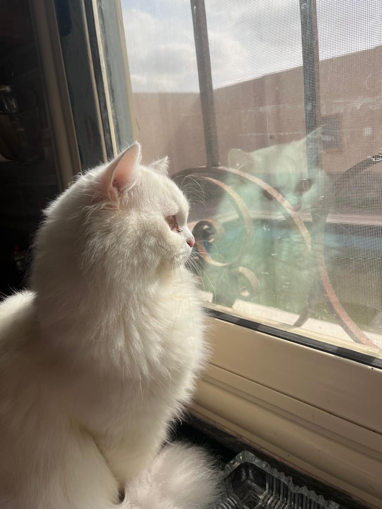
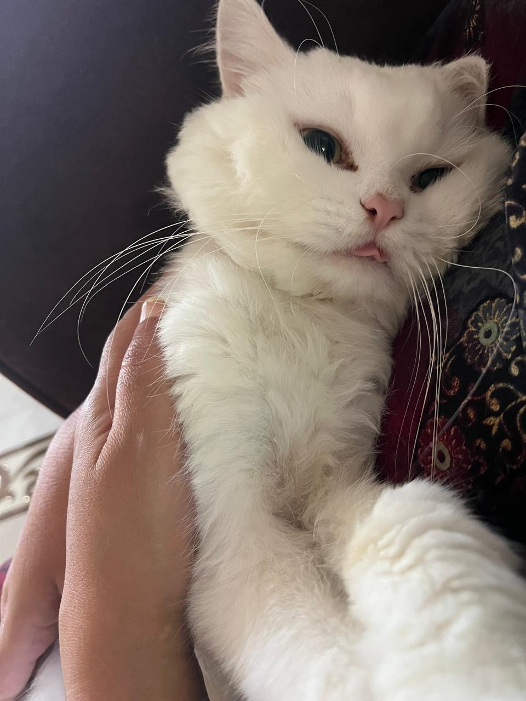
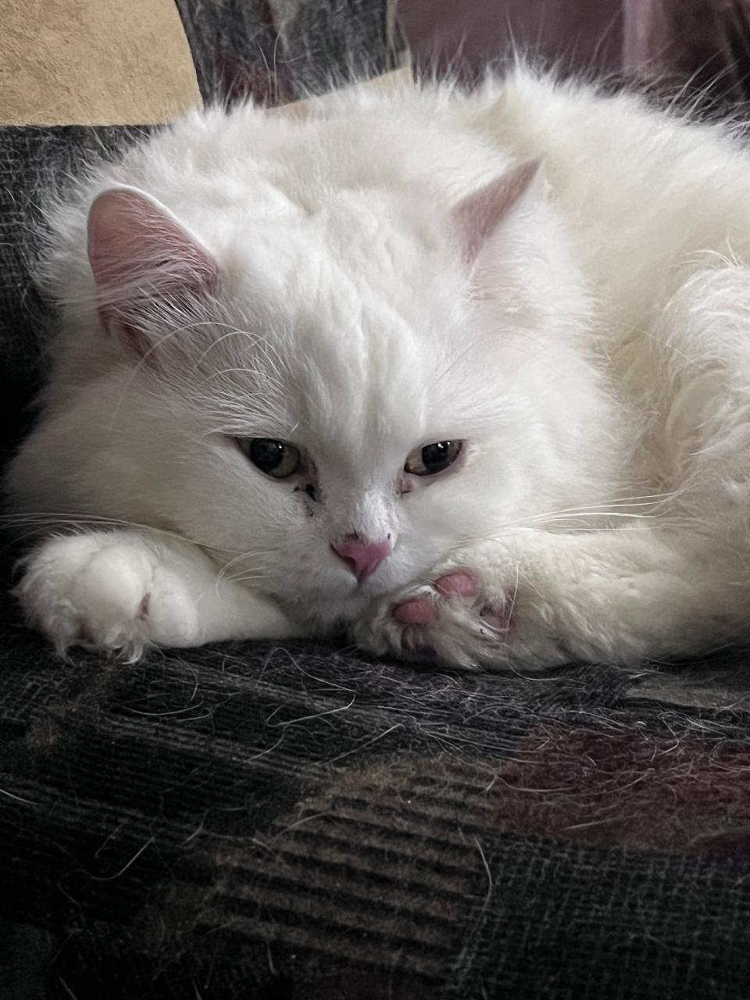
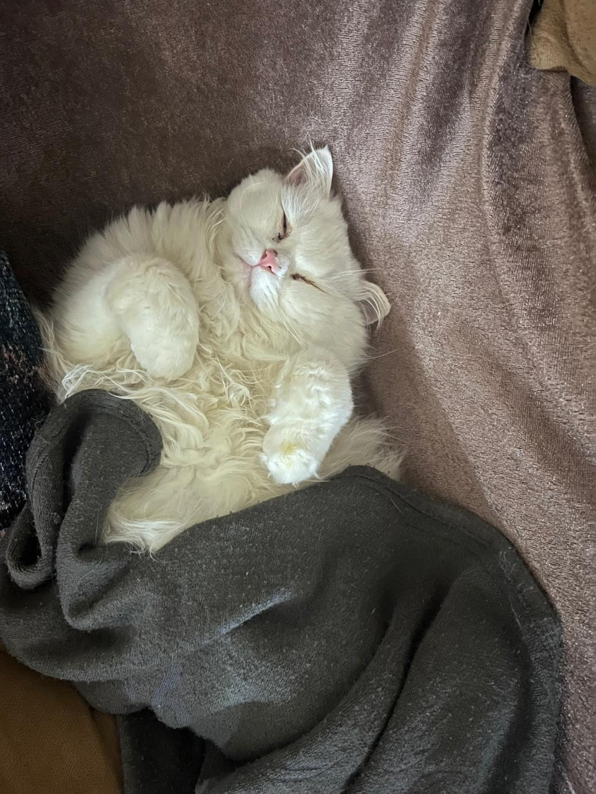

My Lovely Cat
Hi, This is my cat Ziko. He's almost 4 years old. We adopted him since he was one and a half month only.

His Favorite Meals
- Boiled eggs.
- Chicken liver.
- Winby treats.
His Favorite Hobbies
- First of all he enjoys admiring nature.
- He reallyyy enjoys doing nothing.
- Well one of his top Favorite things is ofcourse sleeping.
- Last thing he enjoys being silly. 😂



